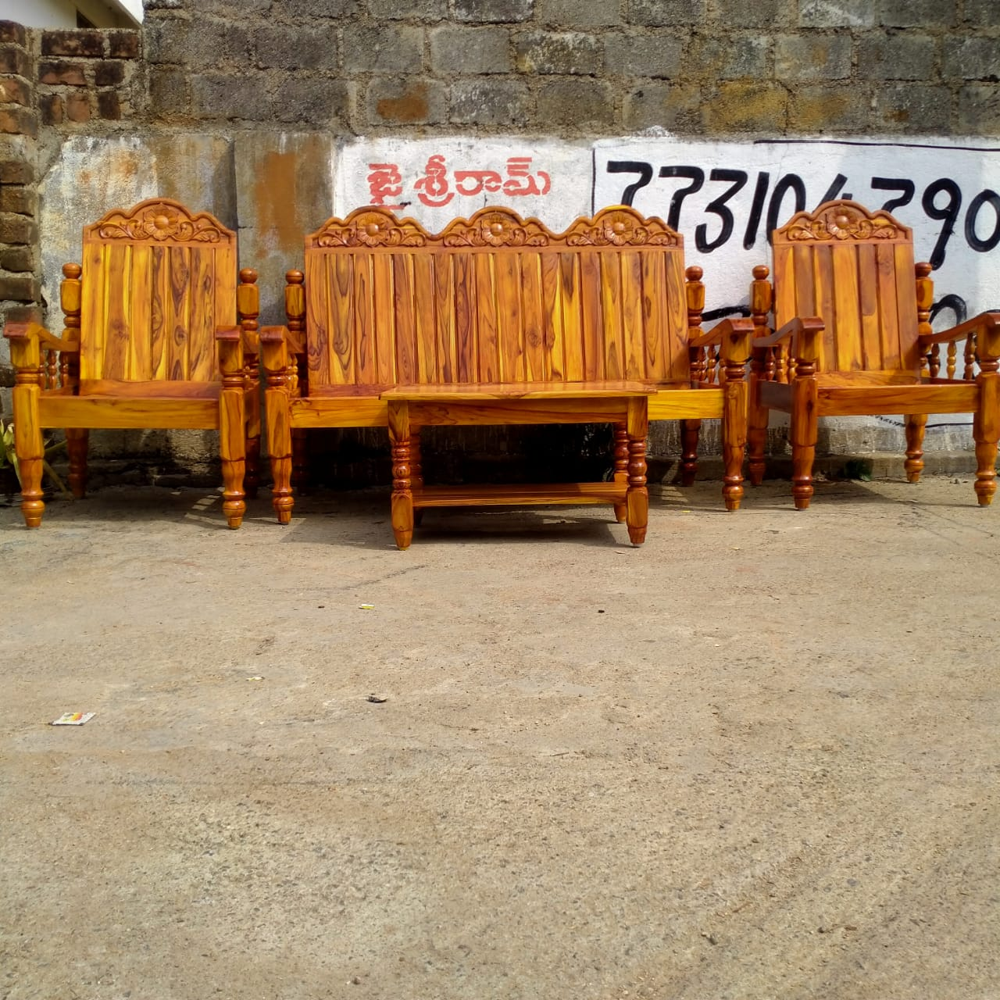
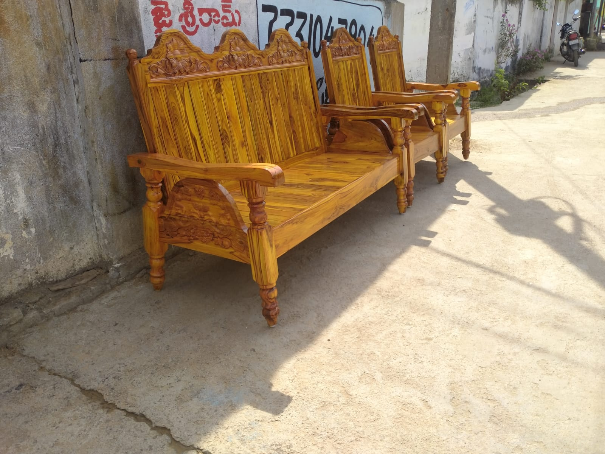
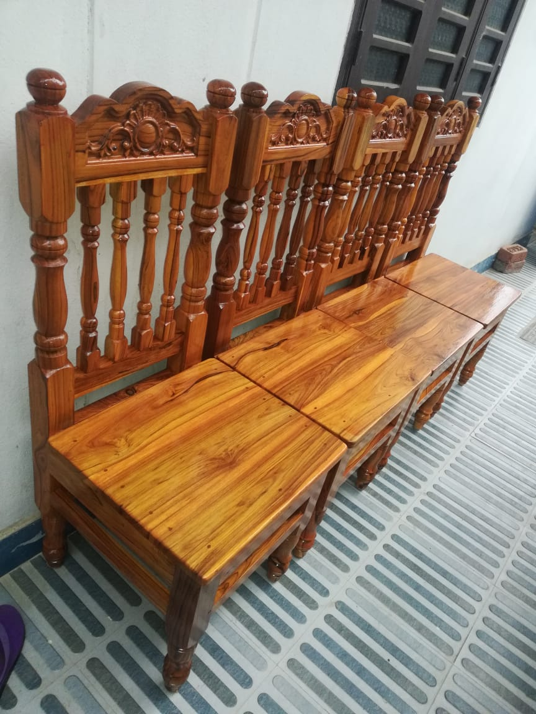
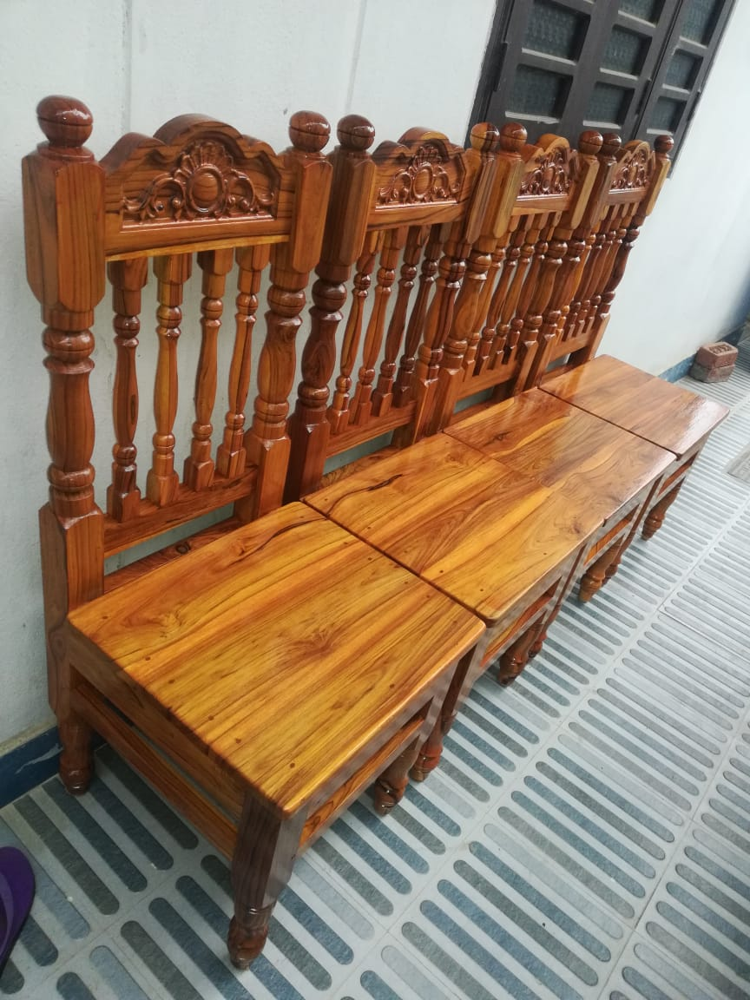
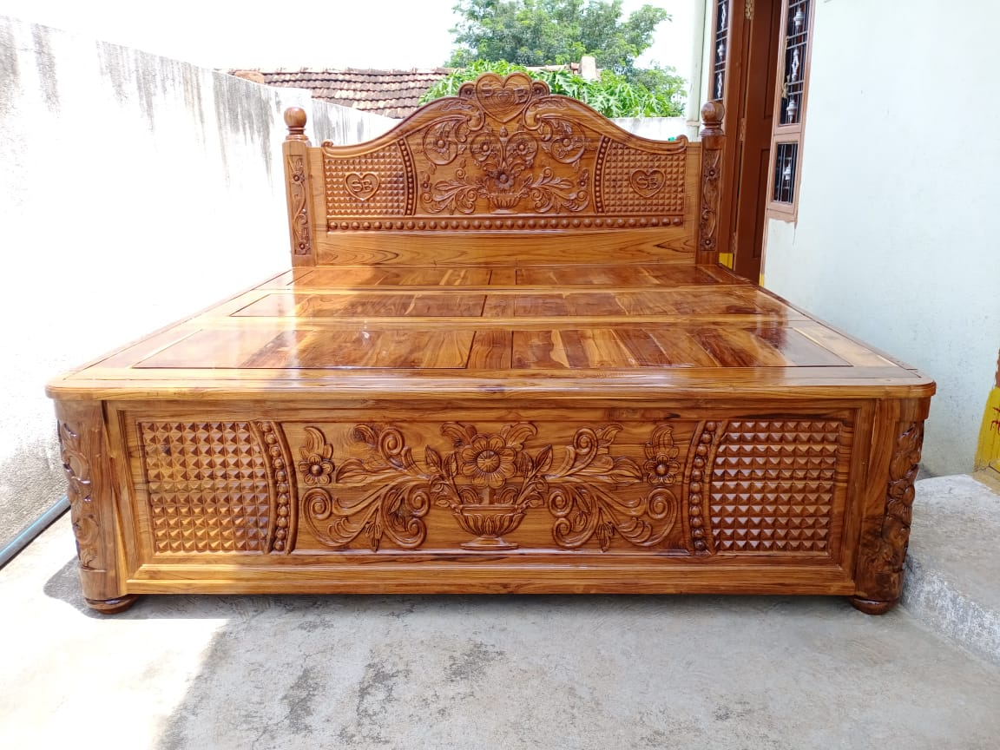

AboutAA Furniture
AA Furniture is a trusted name in the world of premium-quality furniture, specializing in exquisite teak wood pieces. With years of expertise in crafting stunning designs, AA Furniture has become synonymous with luxury, durability, and elegance. Their furniture embodies a blend of traditional craftsmanship and modern aesthetics, catering to the needs of diverse customers.
Welcome to AA Furniture
Where Elegance Meets Durability At AA Furniture, we believe that furniture isn’t just about utility; it’s a reflection of style, comfort, and personality. As a premier destination for teak wood furniture, we take pride in transforming spaces into timeless havens of beauty and functionality. With a legacy of exceptional craftsmanship and a passion for quality, AA Furniture is your trusted partner for creating a home that speaks of warmth and sophistication.
Our Vision and Mission
Vision
- To be a globally recognized brand synonymous with excellence in teak wood furniture, celebrated for our sustainable practices and innovative designs.
Mission
- To craft furniture that marries traditional artistry with modern needs, delivering unparalleled value to our customers while supporting sustainable forestry practices.
Core Values
Craftsmanship
- Every piece is handcrafted with precision, ensuring attention to detail and flawless finishing.
Sustainability
- AA Furniture sources wood responsibly, prioritizing eco-friendly practices to preserve forests for future generations.
Customer Satisfaction
- Committed to exceeding customer expectations with top-notch quality, timely delivery, and excellent service.
-
Vision
- To be a globally recognized brand synonymous with excellence in teak wood furniture, celebrated for our sustainable practices and innovative designs. Mission
- To craft furniture that marries traditional artistry with modern needs, delivering unparalleled value to our customers while supporting sustainable forestry practices.
AA Furniture Products
AA Furniture is crafted using the finest quality teak wood, known for its durability, weather resistance, and aesthetic appeal. These products are ideal for both indoor and outdoor settings, providing timeless elegance and robust functionality. This image displays a meticulously crafted teak wood sofa set characterized by its rich traditional design and durability. The set includes a three-seater main sofa, two single armchairs, and a matching center table, all carved with intricate detailing. The backrests and armrests are adorned with elegant floral carvings, reflecting the finesse of traditional craftsmanship. The vertical slats on the backrest add structural integrity while maintaining a visually appealing design. The natural golden-brown polish enhances the wood's inherent grain patterns, creating a warm and inviting appearance. The turned wooden legs contribute to the furniture’s timeless aesthetic while ensuring stable support. This image features a beautifully crafted teak wood sofa set designed with an elegant yet traditional aesthetic. The sofa's framework boasts intricate carvings, especially on the backrest, where floral patterns add a refined touch of artistry. The vertical slats on the backrest are smoothly polished, showcasing the natural golden-brown grains of the teak wood, which enhances its visual appeal. The armrests are ergonomically designed and seamlessly integrated with the structure, providing both style and comfort.
The legs of the sofa are turned with a classic spindle design, adding stability and a vintage charm to the piece. Teak wood, known for its durability and resistance to pests and weather changes, ensures that this sofa set will stand the test of time. It is ideal for indoor living rooms or semi-outdoor spaces like verandas, offering a perfect blend of utility and sophistication. This is a compact and elegant 4-seater dining set featuring a round wooden table paired with intricately carved chairs. The rich wood finish adds a classic touch, making it suitable for a traditional or rustic-style interior. Its size is ideal for small spaces, offering both functionality and aesthetic appeal. The craftsmanship evident in the carved chair backs and sturdy legs reflects a high-quality build. Perfect for family meals or intimate gatherings.
This image showcases an elegant 6-seater teak wood dining table set, exuding traditional charm and durability. The table features a robust oval-shaped top with a smooth finish, supported by a sturdy central pedestal base carved with fine details for added elegance. Accompanying the table are six beautifully crafted chairs with high backs, combining vertical slats for structural strength and intricate floral carvings on the top panels, enhancing the aesthetic appeal.
The natural golden-brown polish highlights the unique grain patterns of teak wood, emphasizing its premium quality. Known for its termite resistance and longevity, the set is both functional and visually appealing, making it ideal for dining rooms that blend style with tradition. The ergonomic design ensures comfort, while the handcrafted details reflect exceptional craftsmanship. Perfect for family meals or gatherings, this dining table set is a timeless addition to any home. This is a luxurious box bed crafted from high-quality teak wood, known for its durability and elegant grain patterns. The bed features intricate carvings on the headboard and base, showcasing exquisite craftsmanship that enhances its aesthetic appeal. The natural sheen of teak wood adds a warm and rich tone to the design, making it a standout piece in any bedroom. Its robust construction ensures longevity, while the carved details bring a touch of traditional artistry to modern functionality. This beautifully crafted box bed is made from premium-grade teak wood,
a material highly regarded for its strength, resilience, and natural resistance to termites and decay.
The design is both functional and ornamental, featuring intricate carvings of floral and geometric patterns that adorn the headboard and base,
reflecting traditional craftsmanship and timeless elegance. The polished surface enhances the natural grains of the teak, giving it a luxurious and
glossy finish that blends seamlessly with both modern and classic interiors.
The bed is not only aesthetically pleasing but also highly durable, capable of withstanding heavy use over the years.
Product Categories



 



Why you choose Us !
- Premium Quality Materials
- Timeless Designs
- Value for Money
- Nationwide Reach
Using the finest grade of teak wood, known for its strength, natural oils, and resistance to wear and tear.
A wide range of designs from minimalist to ornate, suiting various home decor styles.
Competitive pricing without compromising on quality or craftsmanship.
Easy online ordering, reliable delivery services, and hassle-free customer support.
What Makes AA Furniture Stand Out?
- Uncompromising Quality
- Artisan Craftsmanship
- Innovative Designs
- Customization Options
- Sustainability Commitment
At AA Furniture, we source only the best teak wood from sustainable plantations. Our materials are known for their natural resistance to water, termites, and decay, ensuring that your furniture lasts a lifetime.
Every piece of furniture is handcrafted by skilled artisans with years of experience. Their expertise ensures precision, intricate detailing, and superior finishing, making each item a masterpiece.
Our collections range from traditional classics to sleek contemporary pieces. Whether you love the charm of vintage aesthetics or the simplicity of modern minimalism, AA Furniture offers something for everyone.
Your home is unique, and so should your furniture be. With AA Furniture, you can customize designs, sizes, and finishes to perfectly match your space and style.
We are deeply committed to preserving our environment. By sourcing responsibly and using eco-friendly production processes, we ensure that luxury and sustainability go hand in hand.
Customer Stories ?
Testimonials
Here’s what some of AA Furniture’s customers say"" The teak wood dining set we ordered is stunning. The quality and craftsmanship are unmatched! ""
"" AA Furniture delivers on their promise of excellence. Highly recommend their custom furniture services! ""
Customer Stories
"" We ordered a custom teak wood dining table, and it exceeded all our expectations. The craftsmanship is flawless, and the natural teak finish is stunning!”
– S. Roy
"" The outdoor furniture we bought from AA Furniture has weathered beautifully over the years. Highly recommend their products!”
– A. Patel